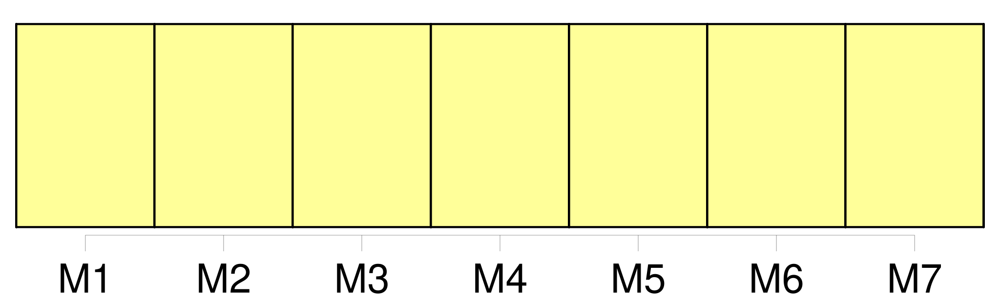

Longueur nb maillons : 15 mentions |
 |
Il est dur d'apprendre sa partie dans [le monde] [51 phrases] La bourgeoisie gave ses intellectuels dans des mues pour qu'ils ne soient pas tentés d'aimer [le monde] [4 phrases]
De temps en temps, ils priaient qu'on fût patient, [le monde] allait prochainement être sauvé. [118 phrases] Comment savoir que la décadence véritable [du monde] était manifestée partout, dans les fabriques américaines, dans les guerres coloniales, les comptoirs africains?? [14 phrases]
Il contenait la paix, la joie, l'approbation [du monde] , le contentement de soi -même. [41 phrases] Il était temps pour eux, il allait être trop tard, d'ouvrir des yeux capables de voir [le monde] , de mettre la main sur un animal charnel, sur des objets à trois dimensions, de vivre soudain une telle journée qu'ils seraient assurés que la vie en général n'est pas le songe irrémédiable de leurs déserts. [91 phrases] C'est [le monde] , avec [ses] fermetures à droite et à gauche, [ses] planchers, [ses] plafonds, il y a des piliers de métal rouge, des tuyaux, des membrures comme à l'intérieur d'un thorax, des ruisseaux avec des arcs-en-ciel de pétrole, des lampes qui se balancent comme des pendules. [2 phrases] Ne pas renverser : [le monde] n'est qu' [une caisse] [3 phrases] Le fond d'un bateau, comme les parois [du monde] , limite toutes les fantaisies. [69 phrases] Blair ne descend même pas à terre pour contempler les paysages : il a fait vingt-cinq ou trente fois escale à Massaouah et il ne cherche pas à savoir que c'est la plus belle baie [du monde] avec son cirque de montagnes, ses eaux jaunes et plates qui traînent des rivières de sable jaune, des amas d'herbes comme l'Amazone, et les débris de cet arbre que j'appelle le Flamboyant. [24 phrases]
Ils ont fait la légende après : le réveil d'Aden dont les galeries conduisent à l'enfer annoncera la fin [du monde] |

|
Il est possible de télécharger la ressource sur la page Ortolang |
Si vous avez des questions ou vous voyez des erreurs, merci d'envoyer un mail à silvia.federzoni89@gmail.com |